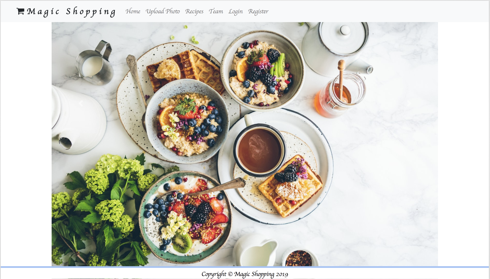
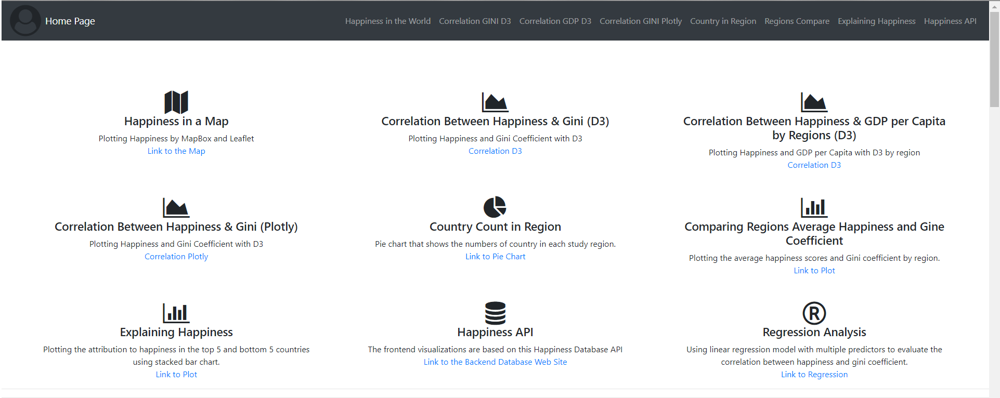
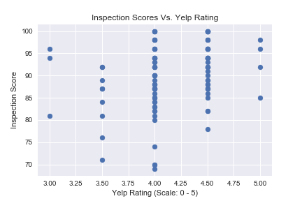

Norman Lo
Economist / Data Scientist
Adjunct College Instructor
San Francisco
Visit Date:
Projects Summary
In-Store Shopping Application
Created by Michelle Yu & Norman Lo
Summary
The project is designed to build a web application that enhances in-store shopping experiences by using different machine learning models. There are three stages of this project. In stage one, we are trying to build an application that can identify picture of an in-store object, so the app can make recommendation to customers shopping. For example, the application can make recommendation of recipes based on the food ingredient picture. The recipe recommendations can also link to the shopping list that related to other ingredients in the store. In stage two, we are trying to create a registration system that saves customers' age, gender, and ethnicity and use it to evaluate the health risk prediction of the customer into our database. Ultimately, we would like to have the recommendation of the recipes related to the health risk of the customer for a healthier food choice. In the final stage, we would like to build an application that can keep track of the search of the merchandise in store, so the store can understand the popularity of their in-store items and make better economic decision.
GitHub Link for the Shopping Application
World Happiness Scores & Gini Coefficient
Summary
In this project, we are trying to create a data product that demonstrates the correlation between World Happiness Scores and Gini Coefficient. The data product will have the back-end database for API call, which is hosted by Heroku, and the front-end dash board to present the visualization and analysis result. We found statistically significant correlation between the World Happiness Scores and Gini Coefficient in this project, which suggests countries with more equal income distribution has a significant attribution to its Happiness Scores.
GitHub Link for Back End Script
GitHub Link for Front End Script
SF Restaurants Public Health Score Vs. Yelp Consumer-Based Rating
Summary
How much you know about your favorite restaurant in San Francisco? In this project, we are tyring to compare Yelp customer-based rating and SF public restaurants scores (cleanness). The project is based on ETL workflow., which involves EXTRACTING, TRANSFORMING, and LOADING data. We first made the API query from Yelp and received 4,050 restaurant rating scores and stored in the SQL database. We then downloaded the public restaurant scores from San Francisco Department of Public Health and stored in the SQL database. Once the database is created, we used Pythong SQLAlchemy library to merge the two relational data. We used Python Plotly library to create visualization of the data. According to the result, we do not find any strong evidence suggest the correlation between customer-based rating and restaurant scores.
US Food Environment & Health Outcomes
Summary
The main objective of this project is to examine the relationship between the food environment and health outcome (obesity & diabetes) at country level.
This project is inspired by the paper Examining the relationship between the food environment and adult diabetes prevalence by county economic and racial composition:
an ecological study
(Haynes-Maslow & Leone, Aug 09, 2017), (https://www.ncbi.nlm.nih.gov/pmc/articles/Pmc5551001).
Informational Policy Relates to Consumers' Food Choice
Summary
This paper investigates how informational policy (especially nutrition label) could help improve consumers choice on healthier food purchase. The statistical analysis is mainly performed on Stata and R. Both multivariate linear regression and logic regression models were applied to this paper. Not only we found a strong correlation on reading nutrition label and health outcome, we also found statistical significant evidence on how education attainment will affect the effectiveness use of nutrition label. The study extended to find the effectiveness of nutrition label to different ethnicity groups.
Download the Presenation PPT Here!